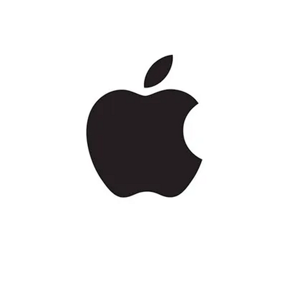
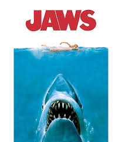

Trabalhos de Stanley

Design da Identidade Visual da Apple
Desenvolvimento da identidade visual da Apple, que se destaca pela sua simplicidade e impacto.

Capa do Álbum 'Abbey Road'
Design icônico da capa do álbum 'Abbey Road' dos Beatles, conhecido por sua fotografia marcante e estilo.

Cartaz do Filme 'Jaws'
Cartaz do filme 'Jaws', famoso por sua representação visual do tubarão, criando uma atmosfera de suspense.